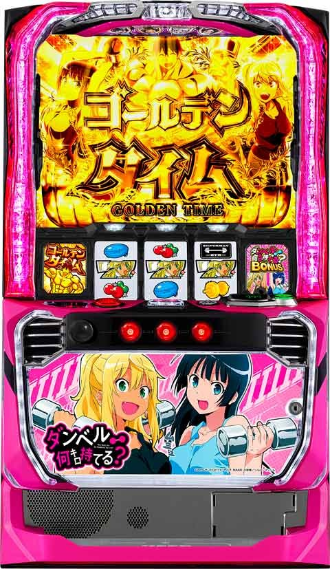
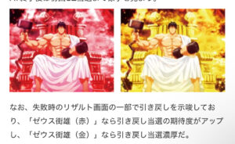
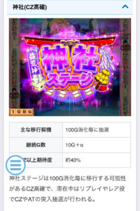
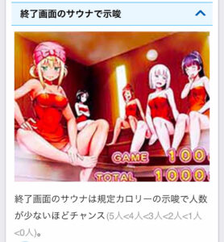
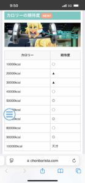
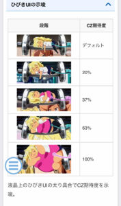
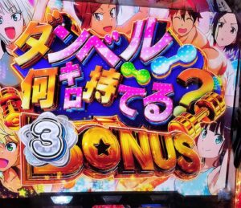

Lダンベル何キロ持てる？

【天井情報】
CZ天井 750G or 10万キロカロリー AT天井
AT間 1500G(リセット時は1000Gに短縮&内部ゲーム数加算あり)
※CZ失敗後は液晶ゲーム数クリアされるがAT間の天井ゲーム数は引き継がれる。
CZスルー天井 5スルー？
【リセット判別】
2024年12月以降のSANKYOはガックンしない？ リセット時はカロリー、G数の内部加算あり。 神社煽りは内部G数依存で発生する。
【有利区間について】
有利区間切れでゴールデンチャレンジorライジングアッパーチャレンジに突入。
上位ATへのCZに突入しても有利切れとは限らない。
狙い目
【リセット狙い】
- AT間 90Gから
- ※朝2回目の強AT狙い(継続率15%)を想定した場合、AT間 40Gから
【AT・CZ間天井狙い】
▼ 下位AT後(90G以内で終了)のAT間狙い目
- 0スルー
480Gから※CZ当選後は、後述する1スルー以降の狙い目を参照して押し引きを判断。
- 1スルー
- CZ間 0-100G:
700Gから - CZ間 101-200G:
450Gから - CZ間 201-300G:
380Gから - CZ間 301-400G:
350Gから
- CZ間 0-100G:
- 2スルー
- CZ間 0-100G:
670Gから - CZ間 101-200G:
400Gから - CZ間 201-300G:
AT当選まで - CZ間 301-400G:
AT当選まで
- CZ間 0-100G:
- 3スルー
- CZ間 0-100G:
400Gから - CZ間 101-200G:
AT当選まで - CZ間 201G以上:
AT当選まで
- CZ間 0-100G:
- 4スルー
AT当選まで
▼ 前回AT継続G数が100-120G(データカウンター表記10-12連)終了後のAT間狙い目
【狙い目補足】
- 朝一1回目、上位AT後、前回2スルー以上からのAT後は特に強い。
- 前回1スルー以内だと少し弱くなるため、ボーダーを50G程度上げた方が安全。
- 2スルー時はAT間のハマりG数を考慮して押し引きを判断する。
- 前回AT間で1000G以上ハマると、次のAT初当たりが軽くなる傾向あり。
- 0スルー
0Gから
- 1スルー
0Gから
- 2スルー
- CZ間 0-100G:
600Gから - CZ間 101-200G:
350Gから - CZ間 201-300G:
350Gから
- CZ間 0-100G:
- 3スルー
- CZ間 0-100G:
AT当選まで - CZ間 101-200G:
AT当選まで
- CZ間 0-100G:
▼ 上位AT後(13連以上)のAT間狙い目
- 0スルー
170Gから
- 1スルー
- CZ間 0-100G:
100Gから - CZ間 101-200G:
AT当選まで
- CZ間 0-100G:
- 2スルー以降
AT当選まで
【CZ間単体狙い】
- ゲーム数:
420Gからを目安 (0スルー時を除く) - カロリー:
58000カロリーから- ※カロリー数やCZスルー回数に応じて、AT間天井狙いのボーダーを調整する。
【カロリーゾーン狙い】
- 20000kcalのゾーンが狙い目。
19000kcal付近から狙う。
【神社ステージ(CZ高確)狙い】
- 突入しやすいG数: 200G / 300G / 500G / 600G
- 狙い方: 規定ゲーム数の10G～20G手前から打ち始め、前兆終了まで打つ。
【有利区間切れ狙い】
- 差枚数を考慮して狙うケースは無し。
やめどき
AT継続が100-120G終了後: 状況に応じて押し引きが変化するため、上記の狙い目記事を参照して判断。
基本: AT後、即やめ。
CZ後: AT間のハマりゲーム数や現在のカロリー数を考慮して続行か判断。
終了画面:
「サウナ画面(二人以下)」出現時は、1回目の「チートデイ(カロリー特化ゾーン)」まで回し、その内容で押し引きを判断するのも有効。
上位CZ失敗後の「ゼウス街雄(赤背景・金背景)」画面は、次回CZ当選まで続行。
その他
引戻し示唆

神社ステージ

終了画面のサウナ示唆

カロリーの期待度

ひびきUI示唆

ボーナス突入画面示唆
BB突入画面で街雄(男)出現で強AT濃厚、要チェック。１０BB満たさなくても強AT狙える可能性あり

参考元
基本情報
- メーカー: SANKYO
- 機械割: 97.7% 〜 114.9%
- 導入開始日: 2024年12月16日（月）
- ゲーム性概要: ●純増約8.5枚の高純増AT機 ●通常時はレア役と規定ポイントでCZを目指すゲーム性 ●ATはゲーム数上乗せ型の擬似ボーナス ●上位ATは差枚数管理の擬似ボーナス


打ち方
打ち方・小役
打ち方（小役狙い）
［最初に狙う絵柄］

左リール上段付近に白7を目押し。ブチあげ絵柄の上側がチェリーの代用になるので、ブチあげ狙いでもOKだ。
［スイカ停止時もフリー打ちでOK］

基本的にスイカ停止時を含め、中＆右リールはフリー打ちしても取りこぼしはない。
［ブチあげ目を狙え］

ボーナス中などはレア役として機能する。
［レア役の停止例］

AT中のレア役成立直後など、一部条件下でレア役成立時に押し順ナビが発生するケースがあるが、抽選は通常のレア役と同じ抽選値でおこなわれている。
［ベルの停止例］

解析情報通常時
小役関連
小役確率
| 役 | 確率 |
|---|---|
| スイカ | 約1/91 |
| 弱チェリー（1枚） | 約1/250 |
| 弱チェリー（リプレイ） | 約1/135 |
| 弱チャンス目 | 約1/72 |
| 強チェリー | 約1/1638 |
| 強チャンス目 | 約1/1638 |
レア役合算確率
| 役 | 確率 |
|---|---|
| 弱レア役 | 約1/27 |
| 強レア役 | 約1/819 |
| 全レア役 | 約1/26 |
レア役を含め、全小役に設定差はない。
小役ごとの役割まとめ
| 抽選 | 役ごとの序列など |
|---|---|
| 通常時の 摂取カロリー獲得 | リプレイ＜弱レア役＜強レア役 ※ベル入賞後は抽選が強化 |
| チートデイ高確移行 （道場ステージ） | リプレイ＜スイカ |
| 通常時の チートデイ当選 | リプレイ＜弱チェリーor弱チャンス目 |
| チートデイ高確中の チートデイ当選 | リプレイ＜弱レア役 ※弱レア役は当選濃厚 |
| CZ高確中のCZ以上当選 | リプレイ＜弱レア役＜強レア役 ※強レア役は当選濃厚 |
| チートデイ中の 摂取カロリー獲得量 | 右記以外＜リプレイ＜弱レア役＜強レア役 ※ベル入賞後は抽選が強化 |
| プロテインBAR中の チートデイゲーム数上乗せ | リプレイ＜弱レア役＜強レア役 |
| CZ前半突破抽選 | 3枚ベル＜リプレイor15枚ベル ＜弱レア役＜強レア役 ※強レア役は突破濃厚 |
※ベル入賞後の抽選は次ゲームが対象、ベル連後ならさらに強化
リプレイが要所要所で活躍するため、レア役頼りにならないところがポイントだ。
獲得できる摂取カロリー
| 役 | 非ベル後 | ベル1回後 | ベル2連以上後 |
|---|---|---|---|
| リプレイ | 100kcal | 500kcal | 1000kcal |
| 弱レア役 | 1000kcal | 2000kcal | 2000kcal |
| 強レア役 | 20000kcal | 20000kcal | 20000kcal |
強レア役はカロリーだけでなくCZの直撃も抽選する。
強レア役時のCZ直撃当選率
| 状況 | 当選率 |
|---|---|
| 非ベル後 | 約16% |
| ベル1回後 | 約16% |
| ベル2連以上後 | 約18% |
チートデイ高確（道場ステージ）移行率
| 役 | 移行率 |
|---|---|
| リプレイ | 約13% |
| スイカ | 約50% |
チートデイ当選率
| 役 | 通常時 | チートデイ高確中 |
|---|---|---|
| リプレイ | 約8% | 約21% |
| 弱チャンス目 | 約50% | 100% |
| チェリー | 約50% | 100% |
| スイカ | － | 100% |
CZ高確（神社ステージ）中のCZ当選率
| 役 | 通常の神社（CZ高確） | 強神社（CZ超高確） |
|---|---|---|
| リプレイ | 約14% | 約22% |
| 弱レア役 | 約50% | 約79% |
| 強レア役 | 100% | 100% |
チートデイ前兆中の書き換え抽選
チートデイのフェイク前兆中は弱レア役でも約40%で本前兆に書き換える。
フェイク前兆中の書き換え当選率
| 役 | 当選率 |
|---|---|
| 弱レア役 | 約40% |
内部状態関連
チートデイ高確（道場ステージ）

チートデイ高確中はリプレイや弱レア役でのチートデイ当選率がアップ。移行時はおもに道場ステージへ移行する。
チートデイ高確性能
| 項目 | 内容 |
|---|---|
| 移行契機 | リプレイ、スイカ、AT終了後の一部など |
| 平均確率 | 約1/56 |
| 平均滞在 | 10G＋α（AT後は20G＋α） |
| 特徴 | チートデイ当選率がアップ ※リプレイの約1/5でチートデイ当選 |
| その他 | チートデイ高確経由のチートデイは高継続に期待、 チートデイ当選時は平均7Gの前兆を経て告知 |
チートデイ高確（道場ステージ）のゲーム数振り分け
| 高確ゲーム数 | 振り分け |
|---|---|
| 10G | 約98% |
| 15G | 約1% |
| 20G | 約1% |
CZ高確（神社ステージ）

100G消化ごとに移行するCZの高確状態で、滞在中はリプレイでもCZ当選のチャンス、もちろんレア役時の期待度もアップ。 滞在中は基本的に神社ステージへ移行する。
CZ高確性能
| 項目 | 内容 |
|---|---|
| 移行契機 | 100G消化ごとの抽選など |
| 保証ゲーム数 | 10G＋α |
| CZ以上期待度 | 約40% |
| 特徴 | CZ当選率がアップ、リプレイでもCZを抽選 ※リプレイの約1/7でCZ当選 |
| その他 | 最終ゲームでリプレイorレア役を 引いた場合は継続濃厚 |
200G・300G・500G・600GはCZ高確当選のチャンスだ。
ゲーム数別のCZ高確（神社ステージ）当選率
| ゲーム数 | 当選率 |
|---|---|
| 100G | ▲ |
| 200G | ◯ |
| 300G | ◎ |
| 400G | ▲ |
| 500G | ◯（強神社のチャンス） |
| 600G | ◎（強神社のチャンス） |
| 700G | ▲ |
「強神社ステージもあり」 内部的にCZ当選率がアップかつCZ当選の一部でATに直行する強神社が存在。500Gor600Gでの当選は強神社に突入しやすい。
AT終了後からの神社ステージ当選率
| ゲーム数 | 当選率 |
|---|---|
| 100G | 約30% |
| 200G | 約60% |
摂取カロリー
摂取カロリー概要

リプレイやレア役時に加算を抽選。10000kcalごとにCZが抽選され、前兆（焼肉屋ステージ）を経て、当落が告知される。 ひびきが太るほど10000kcalごとのCZ当選期待度がアップ。
ベル（3枚・15枚）の次ゲームはリプレイ以上成立時の摂取カロリーが優遇、さらにベル連後は大量加算に期待できるので注目だ。
摂取カロリー性能
| 項目 | 内容 |
|---|---|
| 獲得契機 | リプレイ・レア役 |
| 規定kcal | 10000kcalごとに抽選 |
| 天井kcal | 10万kcal |
摂取カロリーの当選比率
| 獲得した摂取カロリー | 当選比率 |
|---|---|
| 10000kcal | ◯ |
| 20000kcal | ▲ |
| 30000kcal | ▲ |
| 40000kcal | ◯ |
| 50000kcal | ◎ |
| 60000kcal | ◯ |
| 70000kcal | ◎ |
| 80000kcal | ◯ |
| 90000kcal | ◎ |
| 100000kcal | 天井（CZ濃厚） |
チートデイ
チートデイ概要

摂取カロリーの特化ゾーン。毎ゲーム表示されたメニューに応じたカロリーを摂取することができる。
チートデイ性能
| 項目 | 内容 |
|---|---|
| 当選契機 | 弱レア役、プロテインBAR終了後など |
| 保証ゲーム数 | 5G＋α |
| 消化中の抽選 | 毎ゲーム摂取カロリーを獲得 |
| その他 | 30G継続で上位AT濃厚 |
保証ゲーム数は5Gだが、最終ゲームで小役を引く限り終了しない。
また、内部的に6G以上の保証ゲーム数が選ばれている場合もある。
当選ルート別・チートデイの種類振り分け
| チートデイの種類 | 道場ステージ以外 | チートデイ高確中 （道場ステージ中） |
|---|---|---|
| 通常チートデイ | 100% | 約60% |
| 赤チートデイ | － | 約40% |
当選契機（リプレイorスイカ）不問でゲーム数は上記の振り分けになる。
［メニュー］

［カロリー摂取］

［開始画面］

赤文字ならロング継続！
獲得摂取カロリー振り分け
強レア役時の抽選値は通常時とほぼ同じく、20000kcalもしくはCZ直撃。ベル後の抽選も通常時と同じで、獲得できる摂取カロリー量がアップする。赤チートデイは継続ゲーム数が長いだけでなく、役ごとの摂取カロリーも優遇される。
チートデイの平均獲得摂取カロリー
| チートデイの種類 | 平均獲得 |
|---|---|
| 通常チートデイ | 約6000kcal |
| 赤チートデイ | 約15000kcal |
［通常チートデイ/非ベル後］ 摂取カロリー振り分け
| 摂取カロリー | 右記以外 | リプレイ | 弱レア役 | 強レア役 |
|---|---|---|---|---|
| 300kcal | 約29% | － | － | － |
| 500kcal | 約29% | － | － | － |
| 1000kcal | 約32% | 約90% | － | － |
| 2000kcal | － | － | － | － |
| 3000kcal | 約10% | 約10% | 約52% | － |
| 4000kcal | － | － | 約47% | － |
| 5000kcal | － | － | － | － |
| 7000kcal | － | － | － | － |
| 10000kcal | － | － | 約1% | － |
| 20000kcal | － | － | － | 約84% |
| CZ直撃 | － | － | － | 約16% |
［通常チートデイ/ベル1回後］ 摂取カロリー振り分け
| 摂取カロリー | 右記以外 | リプレイ | 弱レア役 | 強レア役 |
|---|---|---|---|---|
| 300kcal | － | － | － | － |
| 500kcal | 約59% | － | － | － |
| 1000kcal | － | － | － | － |
| 2000kcal | 約31% | 約90% | － | － |
| 3000kcal | 約10% | － | － | － |
| 4000kcal | － | 約10% | 約52% | － |
| 5000kcal | － | － | 約47% | － |
| 7000kcal | － | － | － | － |
| 10000kcal | － | － | 約1% | － |
| 20000kcal | － | － | － | 約82% |
| CZ直撃 | － | － | － | 約18% |
［通常チートデイ/ベル2連以上後］ 摂取カロリー振り分け
| 摂取カロリー | 右記以外 | リプレイ | 弱レア役 | 強レア役 |
|---|---|---|---|---|
| 300kcal | － | － | － | － |
| 500kcal | － | － | － | － |
| 1000kcal | 約58% | － | － | － |
| 2000kcal | － | 約90% | － | － |
| 3000kcal | 約32% | － | － | － |
| 4000kcal | － | 約10% | － | － |
| 5000kcal | 約10% | － | 約52% | － |
| 7000kcal | － | － | 約47% | － |
| 10000kcal | － | － | 約1% | － |
| 20000kcal | － | － | － | 約80% |
| CZ直撃 | － | － | － | 約20% |
［赤チートデイ/非ベル後］ 摂取カロリー振り分け
| 摂取カロリー | 右記以外 | リプレイ | 弱レア役 | 強レア役 |
|---|---|---|---|---|
| 300kcal | － | － | － | － |
| 500kcal | 約35% | － | － | － |
| 1000kcal | 約38% | － | － | － |
| 2000kcal | － | － | － | － |
| 3000kcal | 約26% | 約89% | － | － |
| 4000kcal | － | － | － | － |
| 5000kcal | 約1% | 約10% | 約50% | － |
| 7000kcal | － | － | － | － |
| 10000kcal | － | 約1% | 約50% | － |
| 20000kcal | － | － | － | 約84% |
| CZ直撃 | － | － | － | 約16% |
［赤チートデイ/ベル1回後］ 摂取カロリー振り分け
| 摂取カロリー | 右記以外 | リプレイ | 弱レア役 | 強レア役 |
|---|---|---|---|---|
| 300kcal | － | － | － | － |
| 500kcal | 約35% | － | － | － |
| 1000kcal | － | － | － | － |
| 2000kcal | 約38% | － | － | － |
| 3000kcal | － | － | － | － |
| 4000kcal | 約26% | 約89% | － | － |
| 5000kcal | 約1% | 約10% | 約50% | － |
| 7000kcal | － | － | － | － |
| 10000kcal | － | 約1% | 約50% | － |
| 20000kcal | － | － | － | 約82% |
| CZ直撃 | － | － | － | 約18% |
［赤チートデイ/ベル2連以上後］ 摂取カロリー振り分け
| 摂取カロリー | 右記以外 | リプレイ | 弱レア役 | 強レア役 |
|---|---|---|---|---|
| 300kcal | － | － | － | － |
| 500kcal | － | － | － | － |
| 1000kcal | 約35% | － | － | － |
| 2000kcal | － | － | － | － |
| 3000kcal | 約38% | － | － | － |
| 4000kcal | － | － | － | － |
| 5000kcal | 約26% | 約89% | － | － |
| 7000kcal | 約1% | 約10% | 約50% | － |
| 10000kcal | － | 約1% | 約50% | － |
| 20000kcal | － | － | － | 約80% |
| CZ直撃 | － | － | － | 約20% |
プロテインBARステージ

チートデイ移行が濃厚となる特殊状態で、滞在中はリプレイやレア役でチートデイの継続ゲーム数加算を抽選する。
プロテインBARステージ性能
| 項目 | 内容 |
|---|---|
| 移行契機 | CZ終了時、AT終了時の一部など |
| 平均滞在 | 約20G |
| 特徴 | チートデイの継続ゲーム数加算を抽選 ※期待度序列はリプレイ＜弱レア役＜強レア役 |
| その他 | 終了後は高継続のチートデイ突入（赤タイトル） |
ゲーム数加算当選率
| 加算ゲーム数 | リプレイ | 弱レア役 | 強レア役 |
|---|---|---|---|
| ＋1G | 約70% | 約21% | 約1% |
| ＋2G | 約30% | 約79% | 約74% |
| ＋10G | － | － | 約25% |
リプレイでも必ず1G以上加算。強レア役時は約1/4で10Gが加算される。
マッスルゾーン（CZ）
CZ概要

CZは前半・後半の2段階突破型で、前半では小役を引くほどチャンス、レア役なら成功の期待大。後半のブチあげジャッジでは3種類の競技で成否が告知される。 成功時に大きな恩恵を獲得できる強CZも存在する。
マッスルゾーン（CZ）性能
| 項目 | 内容 |
|---|---|
| 当選契機 | 規定摂取カロリー到達時、強レア役時の一部、 規定ゲーム数消化時の一部、 CZ高確中のリプレイ・レア役時の抽選など |
| 継続ゲーム数 | 10G＋α |
| 平均成功期待度 | 約40% |
| 前半突破期待度 | 約77% |
| 後半成功期待度 | アームレスリング：約42% 筋肉道：約55% マッスルプッシュ：約85% |
| 消化中の抽選 | 前半は小役を引くほどチャンス、 後半はレア役を引けば期待度アップ |
［アームレスリング］

［筋肉道］

［マッスルプッシュ］

マッスルプッシュでチャンスアップが発生すれば期待度90%以上だ。
［強CZ］

強CZの期待度は通常と同じ（前半クリアで成功なのでAT期待度は約77%）だが、成功時の報酬がAT＋ゴールデンチャレンジ濃厚。獲得したゴールデンチャレンジは一旦ストックされ、AT中もしくはAT終了画面で告知される。
前半突破＆強CZの成功当選率
| 役 | 当選率 |
|---|---|
| 3枚ベル | 約37% |
| リプレイor15枚ベル | 約48% |
| 弱レア役 | 約73% |
| 強レア役 | 突破濃厚 |
前半は成立役に応じて突破を抽選。強CZ中も同じ抽選値だが、突破すればAT濃厚＋ゴールデンチャレンジを獲得できる。強レア役は突破＋マッスルプッシュ濃厚だ。
後半成功期待度
若干ではあるが、高設定ほどATに当選しやすい。
後半の競技選択率＆AT当選率 （AT当選率は開始時の抽選と消化中の書き換え込みの合算）
| 競技 | 選択率 | AT当選率 |
|---|---|---|
| アームレスリング | 約40% | 約42% |
| 筋肉道 | 約50% | 約55% |
| マッスルプッシュ | 約10% | 約85% |
後半消化中の成功書き換え当選率
| 役 | 当選率 |
|---|---|
| 弱レア役 | 約10% |
| 強レア役 | AT濃厚 |
後半ではまず開始時に成否を抽選して、漏れた場合は競技の種類不問で書き換えを抽選。強レア役成立時は成功濃厚となる。 内部的にATに当選している場合はATのゲーム数上乗せを抽選する（当選時は後乗せ）。
前兆
焼肉屋ステージ

規定摂取カロリー（10000kcalごと）到達時のCZ前兆ステージ。エフェクトの色がアップするほど本前兆期待度がアップする。
焼肉屋ステージ性能
| 項目 | 内容 |
|---|---|
| 移行契機 | 摂取カロリー（フェイク前兆or本前兆） |
| CZ以上期待度 | 約36% |
フェイク前兆中に規定摂取カロリーに到達した場合はシームレスでCZ本前兆へ移行する。
解析情報ボーナス時
ダンベル何キロ持てる？ボーナス（AT/ダンベルボーナス）
ダンベルボーナス概要

ゲーム数管理型の高純増ATで、3種類の告知タイプを任意に選択することが可能。消化中はゲーム数上乗せや金肉ボーナス（上位AT）をかけたゴールデンチャレンジを抽選する。
ダンベルボーナス（AT）性能
| 項目 | 内容 |
|---|---|
| 当選契機 | CZ成功、CZ高確中の直撃、 規定ゲーム数消化時の一部など |
| 継続ゲーム数 | 30G＋α |
| 平均継続ゲーム数 | 約75G（平均獲得640枚） |
| 1Gあたりの純増 | 約8.5枚 |
| 消化中の抽選 | ゲーム数上乗せ、ゴールデンチャレンジ抽選 |
| 平均上乗せ確率 | 約1/26 |
| その他 | 50G未満で終了した場合は終了画面で10G以上を上乗せ ※薄めだが50G以降もこの抽選は発生 |
ゲーム数上乗せとゴールデンチャレンジはダブル抽選なので、1契機で両方に当選する場合もある。両方に当選した場合、基本的には先にゲーム数上乗せが告知される。
また、120G継続した場合もゴールデンチャレンジを獲得。ゴールデンチャレンジを獲得した状態で120Gに到達した場合はゴールデンチャレンジ成功抽選がおこなわれる。
［告知タイプ］

チャンス・最終告知・一発告知の3種類から選択できる。
［開始時のレース名］

レースのグレードで上乗せ期待度が変化？
［ゲーム数上乗せ］

1契機で10〜50Gを上乗せ。
［連続演出］

連続演出成功で上乗せorゴールデンチャレンジを獲得！
［狙えカットイン］

ブチあげ目や7が揃えばゲーム数を上乗せ。
ATモード
AT中には 上乗せ期待度や上乗せ時のゲーム数に影響する3種類のモード（デフォルト・チャンス・大チャンス） が存在。モードはダンベルボーナス開始画面や、AT開始時（チャンス告知選択時のみ）に表示されるレースのグレードで示唆される。
［ダンベルボーナス開始画面：街雄］

通常は女性キャラ5人だが、彩也香と里美の間に街雄が居ればチャンスモード以上の期待度アップだ。
［MⅢレース］

［MⅡレース］

［MⅠレース］

レア役契機・AT中のゴールデンチャレンジ当選率
| 役 | 当選率 |
|---|---|
| その他 | 1%未満 |
| 弱レア役 | 約3%前後 |
| 強レア役 | 約8%前後 |
ゴールデンチャレンジのトータル当選率
| 設定 | 当選率 |
|---|---|
| 1 | 約17% |
| 2 | 約17% |
| 3 | 約17% |
| 4 | 約17% |
| 5 | 約18% |
| 6 | 約20% |
選択した演出モードで見せ方は異なるが、ゴールデンチャレンジはAT開始時や消化中のレア役で抽選。計120G到達時は当選濃厚となる。若干ではあるが、設定5・6はゴールデンチャレンジに当選しやすい。
［チャンス告知］上乗せ期待度
| 役 | 期待度 |
|---|---|
| 弱レア役 | 約46% |
| 強レア役 | 上乗せ以上濃厚 |
［チャンス告知］水着レースの勝率
| レース | 勝率 | GC当選期待度 |
|---|---|---|
| スピニングマッスル | 約45% | 約12% |
| プルマッチョ | 約52% | 約12% |
| ヌルヌルロード | 約62% | 約13% |
| マッスルサーフィン | 約76% | 約12% |
| マッスルクライム | 勝利濃厚 | 約51% |
| トータル | 約55% | 約16% |
［チャンス告知］上乗せ当選時のゲーム数振り分け
| ゲーム数 | 弱レア役 | 強レア役 | 水着レース勝利 |
|---|---|---|---|
| ＋10G | 約88% | 約40% | 約84% |
| ＋20G | 約8% | 約42% | 約11% |
| ＋30G | 約3% | 約16% | 約4% |
| ＋50G | 約1% | 約2% | 約1% |

GC当選時はおもに水着レース勝利時に告知される。
水着レースの選択率＆勝率
| レース | 選択率 | 勝率 | GC当選期待度 |
|---|---|---|---|
| スピニングマッスル | 約30% | 約45% | 約12% |
| プルマッチョ | 約26% | 約52% | 約12% |
| ヌルヌルロード | 約22% | 約62% | 約13% |
| マッスルサーフィン | 約17% | 約76% | 約12% |
| マッスルクライム | 約5% | 勝利濃厚 | 約51% |
| トータル | － | 約55% | 約16% |
※GC…ゴールデンチャレンジ
水着レースはトータル約1/45で発生する。
狙えの確率＆成功期待度
| パターン | フェイク | 成功 | 成功期待度 |
|---|---|---|---|
| 7を狙え | 約1/498 | 約1/1105 | 約31% |
| ブチあげ目を狙え | － | 約1/623 | 100% |
狙え発生時の上乗せゲーム数振り分け
| パターン | 7を狙え | ブチあげ目を狙え |
|---|---|---|
| 失敗（＋0G） | 約69% | － |
| ＋10G | － | 約66% |
| ＋20G | 約10% | 約26% |
| ＋30G | 約16% | 約3% |
| ＋50G | 約5% | 約5% |
［最終告知］マップ進行当選率
| 役 | 当選率 |
|---|---|
| リプレイorベル | 約15% |
| 弱レア役 | 約83% |
| 強レア役 | 約96% |
※マップ進行は1コマor2コマ、レア役時はさらに約7%で5コマ進行
［最終告知］周期バトル・対戦相手ごとの勝率
| 対戦相手 | 勝率 |
|---|---|
| 杏 | 約71% |
| 楓 | 約90% |
| 凛 | 約95% |
| トータル | 約83% |
［最終告知］周期バトル・マップ進行コマ数別勝率
| 進行コマ数 | 勝率 |
|---|---|
| 1コマ目 | 勝利できればGCのチャンス |
| 2コマ目 | 約59% |
| 3コマ目 | 約84% |
| 4コマ目 | 約97% |
| 5コマ目 | 勝利濃厚かつGC期待度約52% |
※GC…ゴールデンチャレンジ
周期バトル・マップ進行コマ数別勝率
| 進行コマ数 | 勝率 | 勝利時のGC期待度 |
|---|---|---|
| 2コマ目 | 約59% | 約2% |
| 3コマ目 | 約84% | 約1% |
| 4コマ目 | 約97% | 約1% |
| 5コマ目 | 100% | 約52% |
※GC…ゴールデンチャレンジ
周期バトル勝利時の上乗せゲーム数振り分け
| 上乗せ | 振り分け |
|---|---|
| ＋10G | 約85% |
| ＋20G | 約10% |
| ＋30G | 約5% |

周期バトルではパチンコでおなじみのオリジナルキャラと対決！
［一発告知］上乗せ期待度
| 役 | 期待度 |
|---|---|
| 弱レア役 | 約39% |
| 強レア役 | 上乗せ以上濃厚 |
［一発告知］上乗せ当選時のゲーム数振り分け
| ゲーム数 | 弱レア役 | 強レア役 |
|---|---|---|
| ＋10G | 約74% | 約42% |
| ＋20G | 約19% | 約28% |
| ＋30G | 約6% | 約25% |
| ＋50G | 約1% | 約5% |

告知発生時の成立役にも注目だ。
ウイニングラン中の抽選

GC（ゴールデンチャレンジ）告知後はウイニングラン状態に移行。ATの獲得ゲーム数が120G未満の場合は通常のAT中と同じくゲーム数上乗せを抽選、120Gに到達している場合はレア役でGCの突破を抽選する。
ウイニングラン中のGC突破当選率 （AT120G獲得後）
| 役 | 当選率 |
|---|---|
| 弱レア役 | 約10% |
| 強レア役 | 約51% |
［ゴールデンタイムランプに注目］

レア役成立時の一部でリール左側にあるゴールデンタイムランプの点滅速度がアップ。速度が早いほどGC突破期待度がアップする。
上位CZ（GC・RUC）共通
GC・RUC確率（概算）・成功期待度
高設定ほどゴールデンチャレンジ（GC）突入率が高いため、結果的に上位ATへ移行しやすい。
ゴールデンチャレンジ
ゴールデンチャレンジ概要

成功すれば金肉ボーナス（上位AT）を獲得できるCZ。消化中のレア役は成功濃厚、最終ゲームではブチあげ目を狙えが発生して、ブチあげ目の停止個数が多いほどチャンスとなる。
ゴールデンチャレンジ性能
| 項目 | 内容 |
|---|---|
| 当選契機 | ダンベルボーナス中の抽選 |
| 成功期待度 | 約56% |
| 成功時の恩恵 | 金肉ボーナス（上位AT） |
［ブチあげ目を狙え］

ゴールデンタイム
ゴールデンタイム概要

金肉ボーナス（上位AT）の初期枚数を決める5Gの特化ゾーンで、消化中はVストックを抽選。獲得したVストックは金肉ボーナス開始時に差枚数へ変化され、Vストック1個につき最低100枚を獲得できる。
ゴールデンタイム性能
| 項目 | 内容 |
|---|---|
| 突入契機 | 金肉ボーナス（上位AT）開始時 |
| 継続ゲーム数 | 5G |
| 平均獲得Vストック | 約4個 |
| 消化中の抽選 | 成立役に応じてVストックを抽選 |
［Vストック獲得］


一度に複数ストックを獲得するパターンもある。
［ダブル倍セプス］

発生時はVストックが2倍になる。
［ゴールデンタイム］Vストック当選率
| Vストック | レア役以外 | 弱レア役 | 強レア役 |
|---|---|---|---|
| 1個 | 約68% | 約21% | － |
| 2個 | 約9% | 約69% | 約50% |
| 3個 | 約2% | 約9% | 約48% |
| 6個 | 1%未満 | 約1% | 約2% |
| トータル | 約79% | 100% | 100% |
6個獲得した次ゲームでダブル倍セプスに当選すればVストック12個を獲得できる。
［ダブル倍セプス］

前ゲームに獲得したVストックが2倍にアップ！
金肉ボーナス（上位AT）
金肉ボーナス概要

差枚数管理型の上位ATで、枚数はゴールデンタイムで決定。消化中の枚数上乗せはすべて3桁以上（100枚以上）になる。
金肉ボーナス（上位AT）性能
| 項目 | 内容 |
|---|---|
| 突入契機 | ゴールデンチャレンジ成功後、 ライジングアッパーチャレンジ成功後、 通常時のCZ成功時の一部など |
| 平均獲得枚数 | 約1070枚 |
| 1Gあたりの純増 | 約8.5枚 |
| 消化中の抽選 | 成立役に応じて差枚数上乗せを抽選 ※上乗せはすべて3桁枚数以上 |
上位AT確率（概算）
| 設定 | 確率 |
|---|---|
| 1 | 約1/6300 |
| 2 | 約1/6200 |
| 3 | 約1/5800 |
| 4 | 約1/5300 |
| 5 | 約1/4900 |
| 6 | 約1/4000 |
［Vストックの枚数変換］

ゴールデンタイムで獲得したVストックを初期枚数として変換。Vストック1つにつき最低100枚以上で、15枚ベル時は約1/8で500枚、レア役時は200枚以上かつ約1/4で500枚以上、強レア役なら500枚：1000枚＝1：1で獲得できる。
［消化中の上乗せ］

［狙えカットイン］

ブチあげ目や7が揃えば差枚数を上乗せ！
Vストックの差枚数変換振り分け
| 役 | 100枚 | 200枚 | 500枚 | 1000枚 |
|---|---|---|---|---|
| リプレイ | 約99% | 約1% | － | － |
| 3枚or15枚ベル | 約76% | 約12% | 約12% | － |
| スイカ | － | 約71% | 約28% | 約1% |
| 弱チェリー | － | 約68% | 約31% | 約1% |
| 弱チャンス目 | － | 約68% | 約31% | 約1% |
| 強チェリー | － | － | 約33% | 約67% |
| 強チャンス目 | － | － | 約50% | 約50% |
Vストックは上位AT開始時、1個ずつ成立役に応じて差枚数に変換。 実際は上記の抽選だが、見た目上分割してその後の小役成立時に加算する、押し順レア役契機で告知するなど多彩なパターンがある。 また、ゴールデンタイム中に告知できなかったストック分がある場合は残りのV表示が「V×？」になる。

1個のVストックで最大1000枚まで獲得できる。
［上位AT］上乗せ当選率
| 役 | 当選率 |
|---|---|
| 弱レア役 | 約29% |
| 強レア役 | 上乗せ濃厚 |
［上位AT］上乗せ当選時のゲーム数振り分け
| 上乗せ | 弱レア役 | 強レア役 |
|---|---|---|
| ＋100枚 | 約66% | 約43% |
| ＋200枚 | 約22% | 約16% |
| ＋300枚 | 約9% | 約4% |
| ＋500枚 | 約2% | 約36% |
| ＋1000枚 | 約1% | 約1% |
弱レア役でチャンス、強レア役なら上乗せ濃厚。薄くではあるが、レア役以外でも上乗せを抽選（当選時はレア役と同じく3桁枚数上乗せ）。 また、上乗せ枚数は押し順レア役時などに分割して告知されることもある。
［上位AT］狙え発生時の上乗せ枚数振り分け
| 上乗せ | 7を狙え | ブチあげ目を狙え |
|---|---|---|
| 失敗 | 約70% | － |
| ＋100枚 | － | 約91% |
| ＋200枚 | 約17% | 約5% |
| ＋300枚 | 約8% | － |
| ＋500枚 | 約5% | 約4% |
| ＋1000枚 | 1%未満 | 1%未満 |
通常のAT（ダンベルボーナス）中と同じく、ブチあげ目を狙えは発生した時点で上乗せ濃厚。7を狙えは成功すれば＋200枚以上濃厚となる（揃い期待度約30%）。
［7を狙えカットイン］

青＜赤＜虹の3種類。
［ブチあげ目を狙えカットイン］

ブチあげ目は停止個数×100枚以上濃厚。1つも止まらなかった場合は1000枚濃厚だ。
ライジングアッパーチャレンジ
ライジングアッパーチャレンジ概要

金肉ボーナス（上位AT）後に突入する引き戻しCZで、流れ的にはゴールデンチャレンジとほぼ同じだ。
ライジングアッパーチャレンジ性能
| 項目 | 内容 |
|---|---|
| 当選契機 | 金肉ボーナス（上位AT）終了後 |
| 成功期待度 | 約56% |
| 成功時の恩恵 | 金肉ボーナス |
失敗後の引き戻し抽選
ライジングアッパーチャレンジ失敗後は特殊な引き戻し抽選が発生。非当選でも当選でも通常時に戻るが、当選していた場合は 内部的な上位AT潜伏状態 となっていて、 自力でCZに当選すると本前兆の最終ゲームで画面がプチュンしてゴールデンタイムに突入 。 この抽選があるため、ライジングアッパーチャレンジ失敗後は最低でもCZ当選まで続行することをオススメだ。AT当選まで続けても理論上の機械割は設定1でも102%以上となる。 なお、潜伏しているかの示唆は終了画面の一部（ゼウス街雄）で示唆される。
※この抽選はライジングアッパーチャレンジ失敗時のみで、ゴールデンチャレンジ失敗時は抽選されない
RUC終了画面の引き戻し（上位AT潜伏）示唆
| 画面 | 示唆 |
|---|---|
| ゼウス街雄：赤 | 潜伏のチャンス |
| ゼウス街雄：金 | 潜伏濃厚 |
※RUC…ライジングアッパーチャレンジ
［ゼウス街雄：赤］

［ゼウス街雄：金］

演出情報
セクシーカットイン
セクシーカットインのキャラ別対応役
| キャラ | 対応役 |
|---|---|
| ひびき | 弱チャンス目以外のレア役 |
| 朱美・彩也香 | 弱チェリーor強チェリー |
| 里美・ジーナ | スイカor強チャンス目 |
※対応役以外なら上乗せ濃厚
［セクシーカットイン］

終了画面のサウナ
サウナの人数別示唆
CZ終了画面およびAT終了画面で表示されるサウナ画面はCZまでの摂取カロリーを示唆していて、人数が少ないほどCZが近い。
［5人］

［4人］

［3人］

［2人］

［1人］

［0人］

ズドン告知＆ぺろ〜ん告知
ズドン告知＆ぺろ〜ん告知解説

ズドン告知は通常時〜AT中のどこで発生してもレア役（おもにチャンス目）濃厚。文字が「ズドン」ではなく「ズドドドン」なら強レア役濃厚となる。押し順ナビ経由のレア役は必ずズドン告知が発生する（この場合は強弱の判別不可）。
ぺろ〜ん告知はレバーON時に発生する告知音で発生時は小役濃厚。小役を否定した場合は何かしらの前兆中（フェイク含む）濃厚だ。
通常時
ステージごとの示唆
| ステージ | 示唆 |
|---|---|
| 商店街ステージ | デフォルト |
| 学校ステージ | デフォルト |
| 道場ステージ | チートデイ高確示唆 |
| 神社ステージ | CZ高確示唆 |
| 焼肉屋ステージ | 前兆 |
| プロテインBAR ステージ | チートデイ濃厚の特殊状態で チートデイの継続ゲーム数アップを抽選 |
［商店街ステージ］

［学校ステージ］

［道場ステージ］

［神社ステージ］

［焼肉屋ステージ］

［プロテインBAR］

神社あおり～移行関連の法則
| 演出 | 法則 |
|---|---|
| 神社あおり中の 絵馬演出 | ● 緑の絵馬なら本前兆のチャンス ● 紫の絵馬なら本前兆濃厚 ● 絵馬の出現順で神社ステージ移行期待度変化 |
| 神社移行時の アイキャッチ | ● 赤なら神社ステージ中のCZ以上当選率アップ |
絵馬の出現順別・CZ高確（神社ステージ）移行率
| 1G→2G→3G目の絵馬 | 4G目のアイキャッチ | 移行率 |
|---|---|---|
| 青→青→非出現 | 第3停止で緑or赤 | 約6% |
| 青→緑→非出現 | 第3停止で緑or赤 | 約19% |
| 緑→青→非出現 | 不問 | 100% |
| 緑→緑→非出現 | レバーONで緑or赤 | 100% |
| ANY→ANY→紫 | 不問 | 100% |
100G消化ごとに突入する神社あおりでは、最大3G間の絵馬の出現順と4G目のアイキャッチの色で期待度が示唆される。
［絵馬］


［アイキャッチ：緑］

［アイキャッチ：赤］

焼肉屋ステージ終了時のスタンプ

焼肉屋ステージがフェイク前兆（CZ非当選）だった場合は、ステージ終了後のリプレイorレア役時にスタンプカードが出現。スタンプは最低2個からスタートして、 5個貯まると「次回無料」＝次の焼肉屋ステージがCZ濃厚 になる。 スタンプカードの色は通常が青で、5個目は必ず赤になるのだが、途中から赤に変化した場合は期待度が劇的にアップ。 また、スタンプは基本的に1個ずつ増えていくが、いきなり2個以上増えた場合は矛盾でCZ濃厚になる。 少なくとも、 赤スタンプ時・矛盾発生時は次回の焼肉屋ステージまで続行しよう 。
スタンプカードの選択率
| タイミング | 青カード | 赤カード | 矛盾パターン |
|---|---|---|---|
| 初回 （次回2個目予定） | 約80% | 約16% | 約4% |
| 2回目 （次回3個目予定） | 約76% | 約18% | 約6% |
| 3回目 （次回4個目予定） | 約74% | 約20% | 約6% |
| 4回目 （次回5個目予定） | － | 100% | － |
スタンプカードごとのCZ期待度
| タイミング | 青カード | 赤カード | 矛盾パターン |
|---|---|---|---|
| 初回 （次回2個目予定） | 約23% | 約93% | CZ濃厚 |
| 2回目 （次回3個目予定） | 約43% | 約96% | CZ濃厚 |
| 3回目 （次回4個目予定） | 約50% | 約98% | CZ濃厚 |
| 4回目 （次回5個目予定） | － | CZ濃厚 | － |

赤いスタンプカードは激アツ！
連続演出の期待度
| 連続演出（登場キャラ） | 平均期待度 |
|---|---|
| クリスタルダンベル（彩也香） | 約23% |
| ひったくり（朱美） | 約58% |
| 人気のパン（ひびき） | 約96% |
赤タイトルやカットインなど、1つでもチャンスアップが出ればチートデイ濃厚だ。
［クリスタルダンベル］

［ひったくり］

［人気のパン］

［プロテインBAR］演出法則
| 演出 | 法則 |
|---|---|
| カクテル演出 | ● 白＜青＜赤＜紫の順で上乗せ期待度アップ ● 赤は約80%で2G以上加算 ● 紫は2G以上加算濃厚 |
| 筋肉格言演出 | ● 複数ゲーム数上乗せの期待度アップ |
| 小津俊夫演出 | ● 複数ゲーム数上乗せの期待度アップ |
| ひびきアップ演出 | ● 複数ゲーム数上乗せの期待度アップ |
| セクシーカットイン | ● 複数ゲーム数上乗せ濃厚（2桁上乗せもあり） ● カットインには強弱が存在（赤・青） |
※ゲーム数上乗せ…チートデイのゲーム数
［カクテル演出：紫］

［筋肉格言演出］

［小津俊夫演出］

［ひびきアップ演出］

［セクシーカットイン］

［神社ステージ］演出期待度
| 演出 | 期待度 | |
|---|---|---|
| おみくじ 演出 | 第1停止時→吉 | 約16% |
| おみくじ 演出 | 第3停止時→吉 | 約36% |
| おみくじ 演出 | 大吉（タイミング不問） | CZ濃厚 |
| 筋肉大明神 演出 | 導入デフォ→告知デフォ | 約6% |
| 筋肉大明神 演出 | 導入チャンス→告知デフォ | CZ濃厚 |
| 筋肉大明神 演出 | 導入デフォ→告知チャンス | 約32% |
| 筋肉大明神 演出 | 導入チャンス→告知チャンス | 約37% |
| 筋肉大明神 演出 | セクシーカットイン | 約98% |
［おみくじ演出：大吉］

［筋肉大明神演出：導入デフォルト］

デフォルトでもリプレイ成立のチャンス！
［筋肉大明神演出：導入チャンス］

レア役濃厚、レア役否定で激アツだ。
［筋肉大明神演出：告知デフォルト］

［筋肉大明神演出：告知チャンス］

ひびきのUI

ひびきのUI別CZ期待度
| 段階 | 期待度 |
|---|---|
| 2段階目 | 約20% |
| 3段階目 | 約37% |
| 4段階目 | 約63% |
| 5段階目 | CZ濃厚 |
摂取カロリーが10000kcal貯まって、ひびきのUIが肥えると前兆スタート。肥え具合は5段階で、肥えるほど本前兆期待度がアップする。

焼肉屋ステージの演出別・本前兆期待度
| 演出 | 期待度 | |
|---|---|---|
| 連続演出移行時の ステージ | 1段階目 | CZ濃厚 |
| 連続演出移行時の ステージ | 2段階目 | 約10% |
| 連続演出移行時の ステージ | 3段階目 | 約29% |
| 連続演出移行時の ステージ | 4段階目 | 約65% |
| 連続演出移行時の ステージ | 5段階目 | CZ濃厚 |
| 筋肉格言 | 青 | 約62% |
| 筋肉格言 | 赤 | 約99% |
| 小津俊夫演出 | 青 | 約69% |
| 小津俊夫演出 | 赤 | 約99% |
| ハイズドン演出 | SU1 | 約13% |
| ハイズドン演出 | SU2 | 約34% |
| ハイズドン演出 | SU1→ズドン告知 | 約50% |
| 焼肉演出 | 3kg | 約18% |
| 焼肉演出 | 5kg | 約67% |
| 焼肉演出 | 10kg | 約75% |
基本的にステージが進むほど本前兆期待度がアップ。筋肉格言や小津俊夫演出は発生した時点でチャンス、赤文字ならほぼ本前兆だ。
［ステージ］

［筋肉格言］

［小津俊夫演出］

［ハイズドン：ズドン告知］

朱美→ひびきとステップアップして3段階目にズドンが発生。リプレイ成立でチャンス、ハズレなら激アツだ。
［焼肉演出：10kg］

チートデイ
［チートデイ］演出法則
| 演出 | 法則 |
|---|---|
| 開始時の赤タイトル | ● 高継続のチャンス |
| 筐体上部ランプの点灯色 | ● ランプの色で継続期待度を示唆 ※継続期待度は白＜青＜緑＜赤 |
| おかわり演出 | ● 強パターンなら3G以上継続 |
| メニューの種類 | ● 青＜緑＜赤＜紫の順で摂取カロリーが多い |
［筐体上部ランプ］

最低保証ゲーム（5G）消化後にPUSHボタンを押すとランプの色で継続するかどうかが示唆される。
［メニューの紫］

青はフライドチキンorピザorナポリタン、緑はチャーハンorオムライス、赤はステーキ、紫は食べ放題or特選和牛重がある。
［おかわり：強パターン］

マッスルゾーン（CZ）
［CZ前半］演出法則
| 演出 | 法則 |
|---|---|
| 擬似連演出 | ● 小役を契機に発生する可能性あり ● 連続するほどチャンス |
| 筋トレ煽り演出 | ● 後半発展のトータル期待度約44% ● 赤文字だと期待度アップ |
| ハイパーラットプルダウン演出 | ● 発生した時点で 後半発展濃厚 |
| ミニキャラダブルナビ | ● 登場キャラで期待度変化 |
| 体重測定演出 | ● 体重計の色で期待度変化 ● 天使ひびき登場で 後半発展濃厚 |
| BCAA演出 | ● 後半発展のトータル期待度約4% ● 胸熱なら 後半発展濃厚 |
演出別期待度
| 演出 | パターン | 期待度 |
|---|---|---|
| 擬似連演出 | 青 | 約33% |
| 擬似連演出 | 緑 | 約62% |
| 擬似連演出 | 赤 | 約98% |
| 筋トレ煽り演出 | 青文字 | 約34% |
| 筋トレ煽り演出 | 赤文字 | 約67% |
| ミニキャラダブルナビ | 彩也香/ひびき | 約1% |
| ミニキャラダブルナビ | 里美/ひびき | 約3% |
| ミニキャラダブルナビ | 朱美/ひびき | 約32% |
| ミニキャラダブルナビ | ジーナ/ひびき | 約46% |
| ミニキャラダブルナビ | ひびき/街雄 | 100% |
| 体重測定演出 | 白い体重計（第1停止） | 約4% |
| 体重測定演出 | 赤い体重計（第1停止） | 約62% |
| 体重測定演出 | 天使ひびき（第3停止） | 100% |
［擬似連演出］

［筋トレ煽り演出］

［ハイパーラットプルダウン演出］

［ミニキャラダブルナビ：里美］

ひびきは基本的に右側に出現。左側に朱美やジーナが登場すればチャンスだ。
［体重測定演出：赤い体重計］

［体重測定演出：天使ひびき］

［BCAA演出：胸熱］

街雄が投げるドリンクに注目だ。
アームレスリングのパターン別期待度

3Gの攻防がおこなわれ、メーターのメモリによって最終ゲームで発生する擬似遊技の成功期待度が変化。擬似遊技で止まるブチあげ目の停止パターンによっても期待度が変化する。
最終的なメーター別期待度
| メーターの目盛 | 期待度 |
|---|---|
| 0 | 100% |
| 1 | 100% |
| 2 | 100% |
| 3 | 約74% |
| 4 | 約28% |
| 5 | 約31% |
| 6 | 約40% |
| 7 | 約48% |
| 8 | 約99% |
| 9 | 100% |
| MAX | 100% |
擬似遊技のブチあげ目停止パターン別期待度
| 停止個数 | 期待度 |
|---|---|
| 右に1個 | 約29% |
| 中に1個 | 約32% |
| 左に1個 | 約44% |
| 中＆右の2個 | 約70% |
| 左＆中の2個 | 約72% |
| 左＆右の2個 | 約71% |
| 3個 | 100% |
［擬似遊技］

筋肉道のパターン別期待度

アームレスリングと同じくラストの擬似遊技で成否が告知されるが、こちらは液晶のチャンスアップがなく、ブチあげ目の停止パターンのみで期待度が示唆される。基本的に2個停止すれば大チャンス、3個止まればAT濃厚だ。
擬似遊技のブチあげ目停止パターン別期待度
| 停止個数 | 期待度 |
|---|---|
| 右に1個 | 約39% |
| 中に1個 | 約44% |
| 左に1個 | 約57% |
| 中＆右の2個 | 約80% |
| 左＆中の2個 | 約81% |
| 左＆右の2個 | 約80% |
| 3個 | 100% |
マッスルプッシュのパターン別期待度

5G間の連続演出がおこなわれ、ラストのボタン連打で成否を告知。赤文字や赤エフェクトなど、1回でもチャンスアップが発生すれば期待度90%オーバーだ。
チャンスアップ発生時の期待度
| チャンスアップ | 期待度 |
|---|---|
| 発生 | 90%以上 |
［赤エフェクト］

ダンベル何キロ持てる？ボーナス（AT/ダンベルボーナス）
AT中の演出モード
| 演出モード | 簡易概要 |
|---|---|
| チャンス告知 | ● おもにレア役でゲーム数を上乗せを抽選して水着レースで告知 ● 開始画面のレースでATモードを示唆 |
| 最終告知 | ● 30G消化後から約10G周期ごとに発生するバトルで上乗せの当落を告知 ● バトル勝利でゲーム数上乗せorGC ● 小役成立で液晶下部のマップ進行を抽選 ● マップが進行するほどバトル勝利期待度がアップ |
| 一発告知 | ● おもにレア役でゲーム数上乗せorGCを抽選 ● 告知発生で上乗せorGC |
※GC…ゴールデンチャレンジ
AT開始時に選択できる。
［チャンス告知］

［最終告知］

［一発告知］

レア役チャンス

全演出モード共通の択当て演出で、正解すればチェリーorチャンス目が停止してゲーム数を上乗せ。失敗時は右上がりにリプレイが揃う。
［チャンス告知］演出法則
| 演出 | 法則 |
|---|---|
| セクシー カットイン | ● 平均期待度約86% ● カットインには強弱が存在（赤・青） ● キャラによって対応役が変化 ● 赤パターンで弱チェリー・強チェリー・スイカ以外なら＋30G以上濃厚 |
| 前兆ステージ | ● 突入した時点で上乗せ以上濃厚 ● 水着レースに発展すればGC濃厚 |
| 狙え演出 | ● 7を狙え成功で＋20G以上 ● ブチあげ目を狙えは発生時点で＋10G以上 |
| 終了画面の PUSH表示 | ● ゲーム数上乗せ濃厚 ● AT復帰後は約59%で水着レースに発展かつ約86%で勝利 |
※GC…ゴールデンチャレンジ
水着レースのチャンスアップ法則
| 演出 | 法則 |
|---|---|
| スピニングマッスル | ● 1つ発生で期待度95%以上 ● 4つすべてが発生すればGCまたは＋30G以上 ● 確定パターン発生でGCまたは＋30G以上 ● 今回予告発生でGCまたは＋30G以上 |
| プルマッチョ | ● 1つ発生で期待度95%以上 ● 4つすべてが発生すればGCまたは＋30G以上 ● 確定パターン発生でGCまたは＋30G以上 ● 今回予告発生でGCまたは＋30G以上 |
| ヌルヌルロード | ● 1つ発生で期待度95%以上 ● 4つすべてが発生すればGCまたは＋30G以上 ● 確定パターン発生でGCまたは＋30G以上 ● 今回予告発生でGCまたは＋30G以上 |
| マッスルサーフィン | ● 1つ発生で期待度95%以上 ● 4つすべてが発生すればGCまたは＋30G以上 ● 確定パターン発生でGCまたは＋30G以上 ● 今回予告発生でGCまたは＋30G以上 |
| マッスルクライム | ● 1つ発生でGCまたは＋30G以上の期待大 ● 3つ以上発生でGCまたは＋30G以上 ● 復活パターン発生でGCまたは＋30G以上 ● 確定パターン発生でGCまたは＋30G以上 ● 今回予告発生でGCまたは＋30G以上 |
※GC…ゴールデンチャレンジ
セクシーカットイン時の上乗せゲーム数割合
| 上乗せ | 割合 |
|---|---|
| ＋10G | 約83% |
| ＋20G | 約10% |
| ＋30G or GC | 約7% |
セクシーカットインは弱チェリー・強チェリー・スイカ以外で強なら＋30G以上濃厚。 水着レースのチャンスアップは共通で赤タイトル、赤文字、必殺技、赤ジャッジ文字の4つで、劇画マッチョや金ジャッジ文字は成功濃厚となる。
セクシーカットインの詳細はコチラ
［前兆ステージ］

上乗せ高確率中の帯出現で前兆ステージだ。
［7を狙え］

期待度は青＜赤＜虹。
［ブチあげ目を狙え］

［水着レース：マッスルクライム］

［水着レースのチャンスアップ］

レースの種類で見た目は多少変化する。
［最終告知］演出法則
| 演出 | 法則 |
|---|---|
| 特定シーンの文字色 | ● 赤文字なら期待度約95% ● 金文字なら成功濃厚 |
| マップ進行中の パターン | ● 赤文字なら期待度約95% ● フェチカットインなら成功濃厚 |
| 周期バトルの タイトル | ● 赤文字なら期待度約95% ● 金文字なら成功濃厚 |
| バトル中の ジャッジの文字色 | ● 赤文字なら期待度約95% ● 金文字なら成功濃厚 |
| 勝ドキをアゲマッスル！ | ● 赤パターンなら20G以上の期待大かつGCのチャンス |
| コンティニュー画面 | ● ジーナor里美出現で復活濃厚 |
※GC…ゴールデンチャレンジ
［マップ進行中：赤文字］

［マップ進行中：フェチカットイン］

［周期バトル：タイトル］

［周期バトル：ジャッジの文字色］

［勝ドキをアゲマッスル！：赤文字］

［コンティニュー画面：里美］

［一発告知］演出法則
| 演出 | 法則 |
|---|---|
| 通常のズドドドドーン | ● ＋10G以上濃厚 |
| ズドドドドーンロングver. | ● ＋20G以上濃厚かつGC期待度アップ |
※GC…ゴールデンチャレンジ
違和感パターン一覧
| 違和感パターン | 恩恵 |
|---|---|
| リール左のゴールデンタイム ランプが一瞬光る | GC濃厚 |
| PUSHボタンが一瞬光る | ＋10G以上濃厚 |
| PUSHボタンが振動 | ＋10G以上濃厚 |
| 上部ランプが一瞬光る | ＋10G以上濃厚 |
| ウーハー振動 | ＋20G以上濃厚 |
| フィーバークイーンの停止音 | ＋20G以上濃厚 |
| PUSHボタンが 一瞬飛び出してもとに戻る | ＋20G以上濃厚 |
| フィーバークイーンの変動音 | ＋30G以上濃厚 |
| PUSHボタンが飛び出す | ＋30G以上濃厚かつGC期待度アップ |
※GC…ゴールデンチャレンジ
［通常のズドドドドーン］

［ズドドドドーンロングver.］


上画像のズドドドドーンロングver.が発生すれば大量上乗せのチャンスだ。
ゴールデンチャレンジ＆ライジングアッパーチャレンジ
［GC・RUC共通］演出法則
| パターン | 法則 |
|---|---|
| ブチあげろの文字色 | ● 赤ならほぼ成功 ● 虹なら成功濃厚 |
| 順押しカットイン | ● 発生時点で成功濃厚（必ず復活） ※逆押しがデフォルト |
※GC…ゴールデンチャレンジ、RUC…ライジングアッパーチャレンジ
ゴールデンチャレンジとライジングアッパーチャレンジは基本的に演出・期待度ともに同じ。
ブチあげろの文字色別期待度
| 文字 | 期待度 |
|---|---|
| デフォルト | 約49% |
| 赤（炎） | 約97% |
| 虹 | 100% |
擬似遊技のブチあげ目停止パターン別期待度
| 停止個数 | 期待度 |
|---|---|
| 右に1個 | 約34% |
| 中に1個 | 約39% |
| 左に1個 | 約51% |
| 中＆右の2個 | 約77% |
| 左＆中の2個 | 約78% |
| 左＆右の2個 | 約76% |
| 3個 | 100% |
［ブチあげろ：赤］

通常はオレンジ色の文字だ。
［逆押しカットイン］

狙えカットインは必ず発生。擬似遊技なので、逆押し時にあえて順押しや中押しで楽しむこともできる。順押しした場合はブチあげ目が停止しないため、次ゲームのレバーONまで期待度が持続。中押し時はブチあげ目が止まれば成功、止まらなければ失敗or復活となる。
金肉ボーナス（上位AT）
［上位AT］演出法則
| 演出 | 法則 |
|---|---|
| 上乗せ前兆 | ● レア役後に必ず移行する前兆擬似連 ● 青＜緑＜赤の順に期待度アップ |
| V投げ演出 | ● 上乗せ告知の基本パターン ● 上乗せ前兆非経由の期待度約46% ● トータル期待度約35% ※その他の告知演出は上乗せ濃厚 |
| セクシーカットイン | ● トータル期待度約84% ● カットインには強弱が存在（赤・青） ● 赤パターンで弱チェリー・強チェリー・スイカ以外なら＋200枚以上濃厚 |
セクシーカットイン時の上乗せ枚数割合
| 上乗せ | 割合 |
|---|---|
| ＋100枚 | 約75% |
| ＋200枚 | 約20% |
| ＋300枚 | 約4% |
| ＋500枚 | 約1% |
| ＋1000枚 | 1%未満 |
セクシーカットインの詳細はコチラ
上乗せ前兆の上乗せ期待度
| 段階 | 期待度 |
|---|---|
| 青 | 約13% |
| 緑 | 約50% |
| 赤 | 超高確率で上乗せ |
狙え演出の性能
| パターン | 7を狙え | ブチあげ目を狙え |
|---|---|---|
| フェイク確率 | 約1/679 | － |
| 成功確率 | 約1/1591 | 約1/1167 |
| 発生時の上乗せ期待度 | 約30% | 100% |
狙え演出成功時の上乗せ枚数振り分け
| 上乗せ | 7を狙え | ブチあげ目を狙え |
|---|---|---|
| なし | 約70% | － |
| ＋100枚 | － | 約90% |
| ＋200枚 | 約16% | 約5% |
| ＋300枚 | 約8% | － |
| ＋500枚 | 約5% | 約4% |
| ＋1000枚 | 1%未満 | 1%未満 |
セクシーカットイン詳細はコチラ
［上乗せ前兆］

［V投げ演出］

［V投げ以外の告知演出］

複数パターンあるが、V投げ以外の告知演出はすべて上乗せ濃厚だ。
［セクシーカットイン］

ゴールデンタイム中の確定法則
| 演出 | 法則 |
|---|---|
| 鬼神降臨演出 | Vストック濃厚 |
| ポージング演出 | Vストック濃厚 |
| ダンベル降り物演出 | Vストック濃厚 |
| アームドクラッシュ演出（画面破壊） | Vストック濃厚 |
| シャッター演出 | Vストック2個以上濃厚 |
| 突然の告知 | Vストック2個以上濃厚 |
| 神の階段演出 | Vストック3個以上濃厚 |
| 今回予告 | Vストック3個以上濃厚 |
［鬼神降臨］

［ポージング］

［シャッター演出］

［突然の告知］

［神の階段演出］

［今回予告］

開始時は次回予告と表示され、「次」の文字が剥がれて「今」になる。
Vストック消化パートの演出法則
| 演出 | 法則 |
|---|---|
| デフォルトの上乗せ | ＋100枚以上濃厚 |
| 筋肉の伝説 | ＋200枚以上濃厚 |
| ダブルパイセプス | ＋200枚以上濃厚 |
| 究極腕立て伏せ | ＋200枚以上濃厚 |
| 最強V開放演出 | ＋1000枚濃厚 |
| 7を狙え成功 | ＋200枚以上濃厚 |
| ブチあげ目を狙え （必ず1個以上停止） | 停止個数 ✕ 100枚濃厚、 1個も止まらなければ＋1000枚濃厚 |
［筋肉の伝説］

［究極腕立て伏せ］

［最強V開放演出］